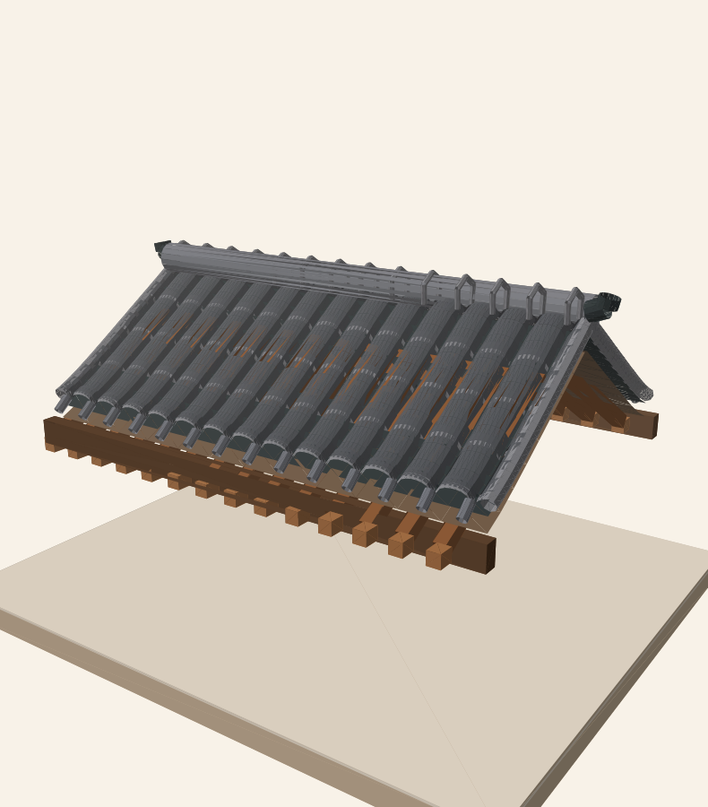

RESEARCH STAGE 01 · UX-G201 / UX-G202
连续屋面与异类接缝研究
Huizhou Fantasy Architecture · 确定性 RoofGroup / 壳体、山墙与木构组合
研究中 · 尚未视觉验收

验证目标：两个长度不同的连建方案共享真实瓦片、屋脊和檐口相位；装饰线和山墙端面不悬空。采用相同输入应精确复现相同网格，刻意制造参数失配必须被契约拒绝。当前只进行功能及几何验证；最终视觉质量由用户判断。
Huizhou Fantasy Architecture · 确定性 RoofGroup / 壳体、山墙与木构组合
